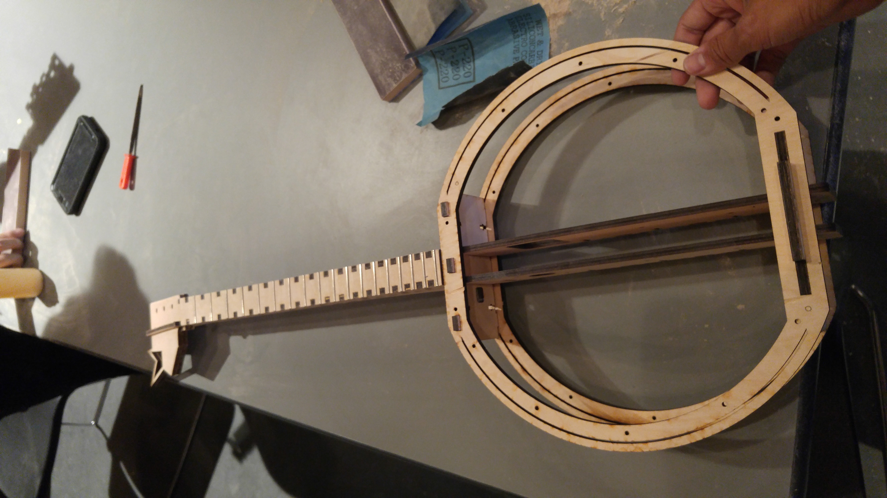

Making Web Pages: We finished our test with Google maps, as you can see underneath this post. I was also working on the previous pages and adding more content and anchors for the other pages. The blog is looking excellent so far.
Coding for Games 1: Today, we created many other features for my game. We added sound effects (victory, coin, and bounce) to further the gaming experience. I also added a timer for completion, until the game resets the board again. In addition, I created my first build and tested it on the Mac.
Musical Robots 1: Finally, almost completed the instrument. Since the fretboard was a bit too wide, we had to sand off a few inches. My hand hurt so much from sanding everything. From the neck and the fretboard to the headstock and bottom, I used 2 sanding blocks. Right after, I connected the bottom and tops of the body. I hope we can finish everything on time tomorrow. :)
